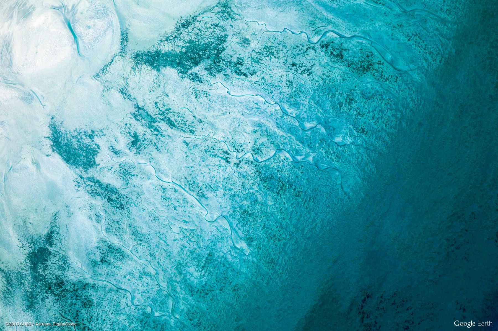
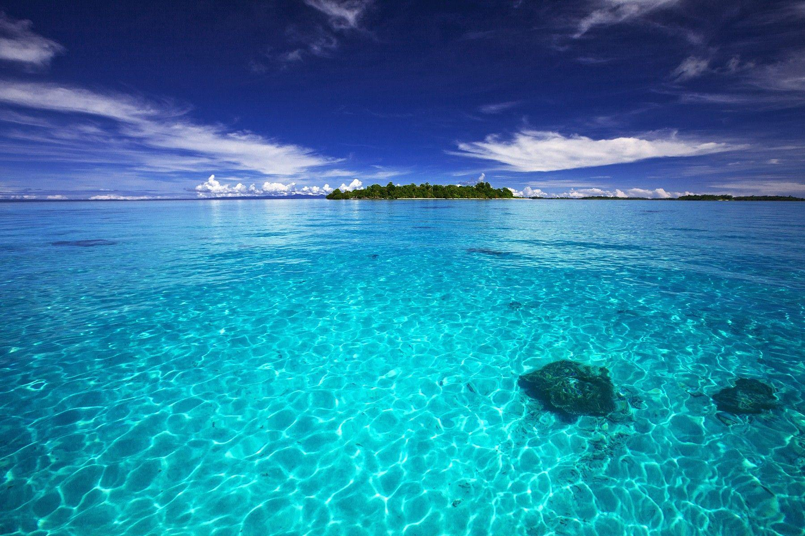
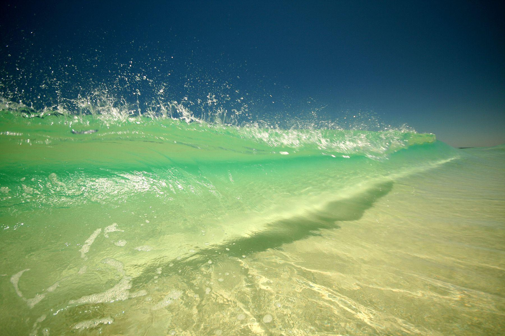
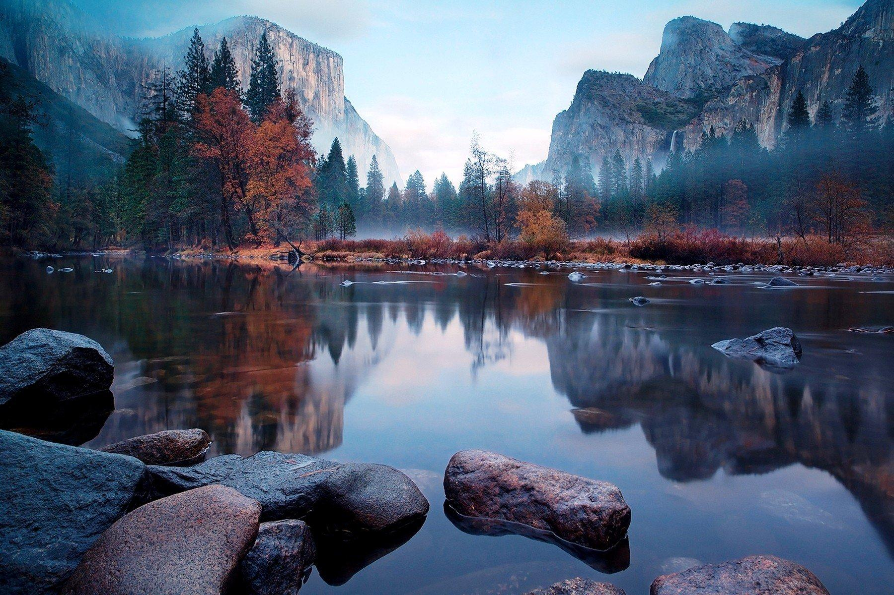

Responsive webpages
Home
About
Contact

Water that is possibly found in the ocean.

water that is found in the ocean with the view of an island.

Water that comes from waves on a beach.

water found somewhere in a forest with a beatiful view.